Panduan Bermain MyFarmTwin
Dari tanam selada pertama hingga membangun rumah tropis. Ikuti langkah sesuai progres farm dan ketuk screenshot untuk melihatnya dalam ukuran penuh.
Mulai bermain
- Buka beranda MyFarmTwin dan pilih Main farm 3D. Pakai pilihan ID di kanan atas untuk mengikuti nama tombol dalam panduan ini.
- Pemain baru mulai pada Hari 1 · 06:00 dengan 120 koin dan 24 bed siap ditanami. Kamu bisa langsung bermain tanpa membuat akun.
- Pilih Kontrol → Buka pada peta untuk melihat tujuan seperti Rumah, Kebun, Ayam, dan Market. Di desktop, Menu farm membuka panel tindakan di atas peta. Di HP, panel tindakan ada di bawah peta. Kamu juga bisa klik atau ketuk objek 3D untuk membuka panelnya.
- Pilih Jalan di kiri atas peta agar waktu berjalan. Satu jam farm berlangsung 12 detik. Tombol itu berubah menjadi Jeda saat aktif. Gunakan +6 jam atau +24 jam di bagian Waktu farm untuk maju sekaligus. Menanam, merawat kandang, berjualan, dan mengambil pesanan tetap bisa dilakukan saat waktu dijeda.
Seret peta untuk memutar pandangan. Gulir roda mouse atau cubit dengan dua jari untuk zoom. Gunakan Seluruh farm untuk kembali ke pandangan umum dan Reset kamera untuk mengembalikan sudut area yang sedang dibuka.

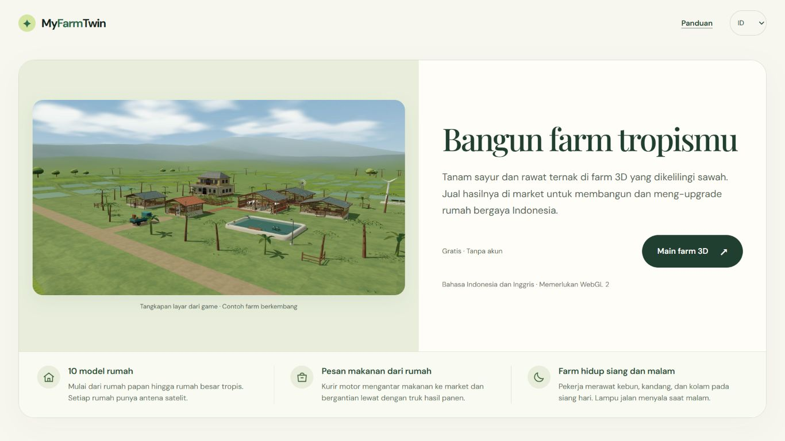

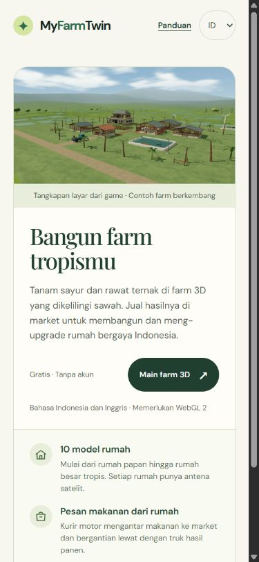

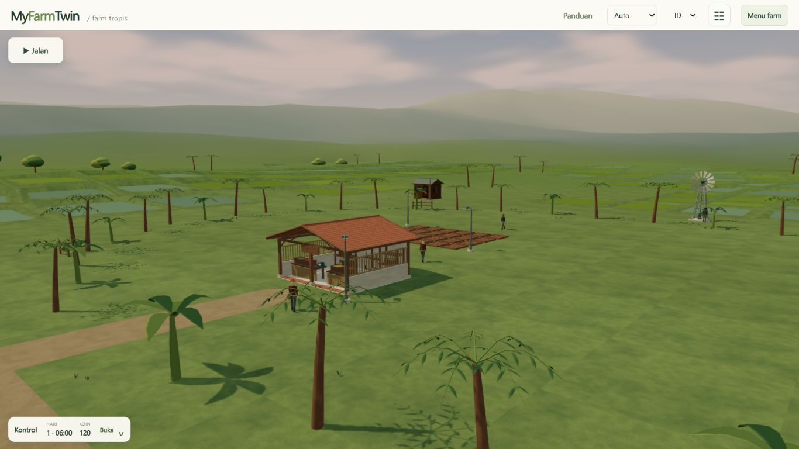

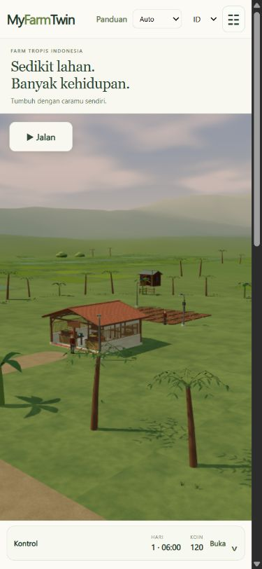
Tanam, siram, lalu panen
- Buka Kontrol → Buka → Kebun. Pilih salah satu nomor di daftar bed. Kamu bisa mulai dengan Bed 1.
- Pilih Tanam Selada. Untuk tanaman lain, pilih tomat atau jagung saat benihnya tersedia. Daftar benih dan tombol Beli ada di bagian Persediaan Bersama.
- Periksa meter Kelembapan tanah dan gunakan Siram bed saat perlu. Dari panel Kebun, Siram yang perlu merawat beberapa tanaman sekaligus memakai stok air bersama.
- Jalankan atau majukan waktu. Dengan air cukup, selada siap sekitar 18 jam farm, tomat 30 jam, dan jagung 42 jam. Tanah kering memperlambat pertumbuhan.
- Saat pertumbuhan mencapai 100%, pilih Panen di bed atau Panen yang siap dari Kebun. Hasil masuk ke gudang di menu Market.
Isi persediaan air bersama saat kandang kehabisan air
- Buka Kontrol → Buka → Kebun, lalu gulir ke Persediaan Bersama.
- Pilih Isi 120 L · 6 koin. Periksa jumlah baru di Air kebun & ternak.
- Kembali ke Ayam, Kambing, atau Sapi dan pilih Isi air. Untuk kolam, buka Ikan dan pilih Ganti air 200 L. Ulangi pengisian stok bersama jika perlu.
Game memakai cadangan fasilitas terlebih dahulu, lalu mengambil dari persediaan bersama. Tombol Bangun pompa · 80 di Kebun menambah pompa penyiraman yang juga memakai stok bersama.

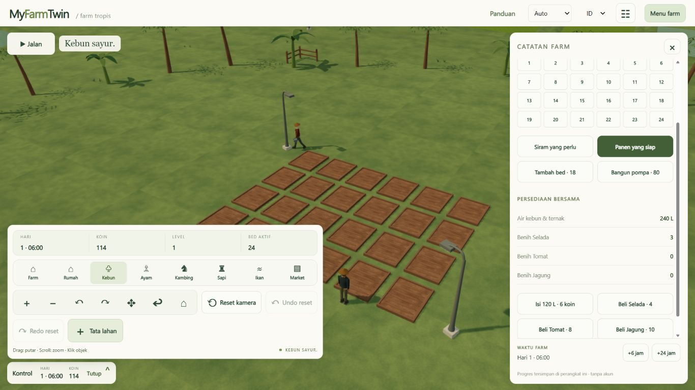

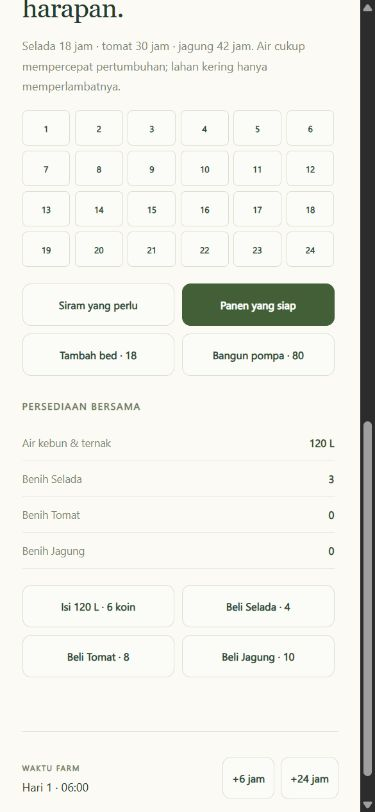
Rawat kandang dan kolam
- Pilih Ayam, Kambing, Sapi, atau Ikan dari Kontrol. Pilih Mulai gratis untuk membuka fasilitas pertama, hewan, dan persediaan awal di area itu.
- Periksa meter pakan, air, dan kebersihan. Gunakan Isi pakan, Isi air, dan Bersihkan gratis sesuai kebutuhan. Beli pakan menambah stok. Isi pakan memindahkannya dari stok ke tempat makan.
- Kumpulkan produk yang siap dengan Ambil telur, Perah susu, atau Panen ikan matang. Untuk kambing, lihat pertumbuhan dan kondisi di daftar hewan, lalu pilih Jual pada kambing yang ingin kamu lepas.
- Pilih Tambah hewan jika masih ada kapasitas. Lihat interior mendekatkan kamera ke dalam kandang. Jika punya lebih dari satu fasilitas sejenis, pakai pilihan Pilih fasilitas di panel atau ketuk kandang yang ingin dirawat.
Upgrade kapasitas dan perawatan otomatis
Setiap kandang atau kolam mulai di Tingkat 1. Tiga upgrade berikutnya berbiaya 50, 100, dan 150 koin. Upgrade menambah kapasitas. Setelah mencapai Tingkat 2, tekan Otomatis: mati untuk mengaktifkan isi pakan dan air dari stokmu. Kamu tetap bisa membeli pakan, mengisi air bersama, dan membersihkan fasilitas secara manual.

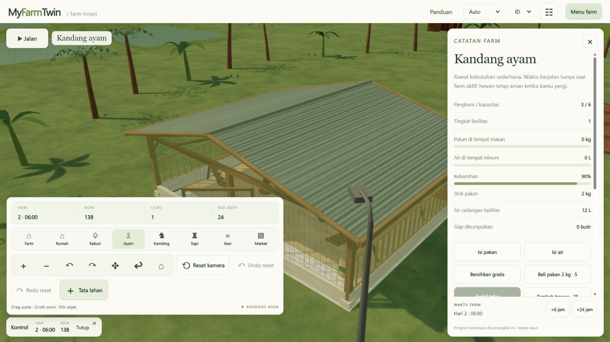

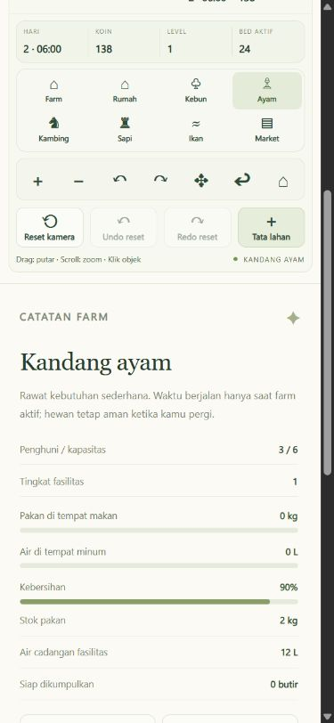
Jual hasil di market
- Buka Kontrol → Buka → Market. Gulir ke Hasil di Gudang untuk melihat jumlah, mutu, dan nilai jual panen atau hasil ternak.
- Pilih Jual pada satu baris hasil, atau Jual semua hasil layak untuk mencairkan seluruh stok yang bisa dijual.
- Jika mengejar bonus, lihat Pesanan Tetangga sebelum menjual stok. Siapkan semua barang dan jumlah yang tercantum, lalu pilih Kirim pesanan. Kamu menerima nilai hasil dan bonus pesanan.
- Periksa Catatan Transaksi untuk melihat pemasukan dan biaya. Penjualan hasil mengisi saldo yang bisa dipakai untuk membangun serta meng-upgrade rumah.

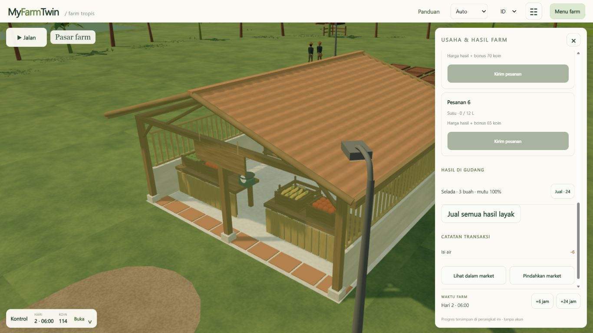

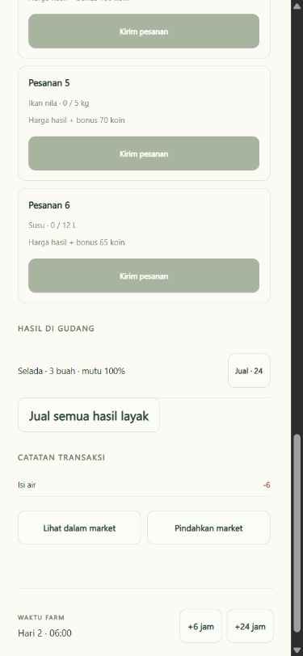
Bangun dan upgrade rumah
- Jual panen atau produk ternak, lalu buka Kontrol → Buka → Rumah. Periksa angka Koin hasil penjualan. Saldo inilah yang dipakai untuk rumah.
- Setelah ada 50 koin hasil penjualan, pilih Bangun rumah kecil. Tempatkan rumah di lahan milikmu dengan jarak minimal 10 m dari kandang ayam, kambing, dan sapi. Game mencadangkan ruang untuk rumah tingkat 10 sejak awal.
- Setelah posisi valid, pilih Simpan posisi. Dari panel rumah, lihat Model berikutnya dan gunakan tombol Upgrade ke tingkat … saat saldo cukup. Pindahkan rumah bisa dipakai untuk mencari posisi lain.

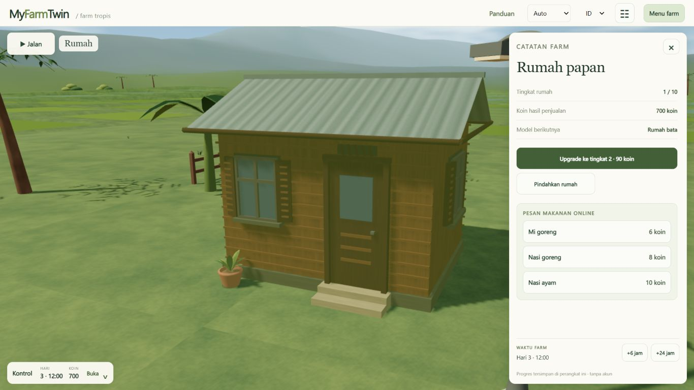

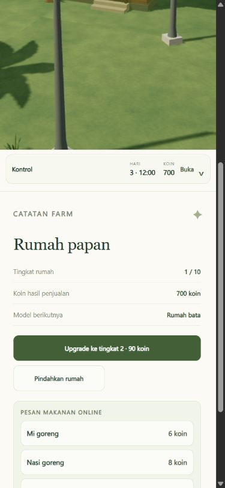
| Tingkat | Model | Koin |
|---|---|---|
| 1 | Rumah papan | 50 |
| 2 | Rumah bata | 90 |
| 3 | Rumah kampung | 145 |
| 4 | Rumah beranda | 220 |
| 5 | Rumah keluarga | 320 |
| 6 | Rumah sayap L | 470 |
| 7 | Rumah limasan | 650 |
| 8 | Rumah dua lantai | 900 |
| 9 | Rumah pendopo | 1.200 |
| 10 | Rumah besar tropis | 1.550 |
Pesan makanan dari rumah
- Setelah rumah terbangun, buka panel Rumah. Di Pesan makanan online, pilih Mi goreng · 6 koin, Nasi goreng · 8 koin, atau Nasi ayam · 10 koin. Setiap rumah sudah memiliki antena satelit.
- Pilih Lihat Pasar farm. Motor dan truk memakai jalan yang sama secara bergantian. Tunggu status Siap diambil di Pasar farm dan munculnya tombol Ambil pesanan.
- Tekan Ambil pesanan. Satu pekerja akan berjalan ke meja market, mengangkat paket, lalu membawanya pulang. Pilih Lihat rumah saat tersedia untuk melihat pekerja masuk.
- Status selesai ketika muncul Makanan sudah tiba di rumah. Setelah itu kamu bisa memesan lagi. Jika halaman dimuat ulang di tengah perjalanan, pengantaran dilanjutkan dari tahap yang sudah tersimpan.

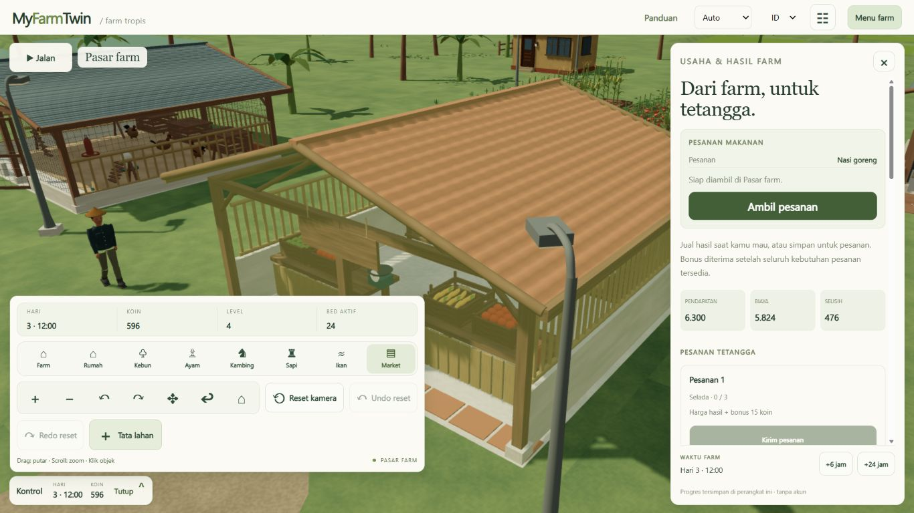

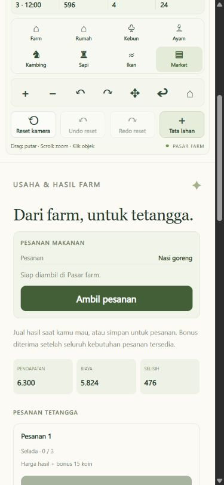
Tata lahan dan lihat aktivitas farm
- Buka Kontrol → Buka → Tata lahan untuk menambah fasilitas, bed, pompa, pohon, jalan setapak, atau pagar. Harga dan batas jumlah ditampilkan di katalog.
- Ketuk tanah atau ubah koordinat X dan Z, pilih sudut, lalu pilih Simpan posisi. Sisakan akses di depan pintu dan ruang antarbangunan. Pindahkan bangunan milikmu lewat panelnya secara gratis.
- Jika batas lahan terlalu sempit, pilih Perluas lahan dari katalog. Penanda kayu di sudut peta menunjukkan batas milikmu.
Pada pagi dan siang hari, pekerja bergantian mengurus ladang, kandang, kolam, dan market. Beberapa mengambil air dari kincir pompa. Truk mengambil muatan di market. Pekerja mulai pulang sekitar pukul 17:00. Lampu di sekitar ladang, kandang, rumah, kolam, dan market menyala dari 18:00 sampai 06:00 waktu farm. Kamu bisa melihat turbin angin, panel surya, dan transformator di sisi farm.
Simpan dan pulihkan farm
MyFarmTwin menyimpan progres secara otomatis di browser yang kamu pakai. Simpan salinan teks agar kamu bisa memindahkannya ke HP atau komputer lain.
- Pilih ikon ☷ (Data farm) di bagian atas game, lalu pilih Tampilkan cadangan dan salin teks dari kotak Salinan farm.
- Untuk pindah perangkat, buka menu yang sama di perangkat tujuan dan tempel teksnya. Pilih Impor dari teks, periksa pesannya, lalu pilih Konfirmasi ganti farm.
- Gunakan Pulihkan cadangan sebelumnya untuk memulihkan salinan lokal yang tersedia. Bila peta 3D sulit dibuka, gunakan pemulihan tanpa 3D untuk mengakses cadangan.